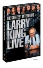

What is this site?
Stephen's Profile
Browser Extension
Stephen Klancher
Recent
Overall
Year Overview
Series
Lists
Larry King Live
List contains: 12 items, 0.2 hours.
Seasons:
2
|
3
|
4
|
5
|
7
|
8
|
22
|
Title Search (4+ characters):
Group:
None
Example Group: Me and Stephen
Who's seen it:
No filter
Everyone
No One
Anyone
Anyone Has Not
Who's commented:
No filter
Everyone
No One
Anyone
Anyone Has Not
Netflix:
No Filter
Available for Instant Watch
Netflix Link Known
Netflix Link Unknown
Missing Data:
No Filter
Runtime
Season
Release Year (YYYY) or Decade (YYYx):
Sort:
Normal
Newest Episodes First
Episodes in Order
Recently Watched First
Watched in Order
Newest Releases First
Releases in Order
Stephen Klancher
...has seen 0
...has not seen 0.2 hours
Timeline

Season 2
Episode dated 24 February 1988 (1988)
Airs on 1988-02-24
S2 - E1 of
Larry King Live
Stephen Klancher
:
Episode dated 28 November 2003 (2003)
Airs on 2003-11-28
S2 - E6 of
Larry King Live
Stephen Klancher
:
Season 3
Michael Moore and Ari Fleischer (2008)
Airs on 2008-02-06
S3 - E6 of
Larry King Live
Stephen Klancher
:
Season 4
Episode dated 2 January 2009 (2009)
Airs on 2009-01-02
S4 - E2 of
Larry King Live
Stephen Klancher
:
Jesse Ventura's Conspiracy Theory (2009)
Airs on 2009-11-30
S4 - E2 of
Larry King Live
Stephen Klancher
:
McCarthy & Somers (2008)
Airs on 2008-12-20
S4 - E4 of
Larry King Live
Stephen Klancher
:
Season 5
Episode dated 24 April 2002 (2002)
Airs on 2002-04-24
S5 - E5 of
Larry King Live
Stephen Klancher
:
Episode dated 2 July 2004 (2004)
Airs on 2004-07-02
S5 - E6 of
Larry King Live
Stephen Klancher
:
Episode dated 18 June 2005 (2005)
Airs on 2005-06-18
S5 - E7 of
Larry King Live
Stephen Klancher
:
Season 7
Episode dated 9 January 2001 (2001)
Airs on 2001-01-09
S7 - E2 of
Larry King Live
Stephen Klancher
:
Season 8
Episode dated 12 September 2006 (2006)
Airs on 2006-09-12
S8 - E7 of
Larry King Live
Stephen Klancher
:
Season 22
Jon Stewart (2006)
Airs on 2006-02-26
S22 - E30 of
Larry King Live
Stephen Klancher
:
Watched an episode not known by IMDb?
Season:
-
Episode:
Date:
Comment: